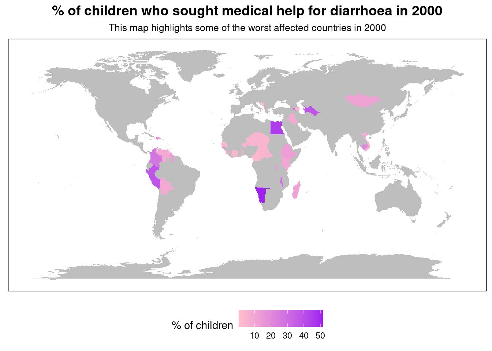

An international call to action: Children Need Clean Water
A study into the effects of unclean water for lower income economies
The Problem
Diarrhoea remains a leading cause of death for children under 5.
Extreme childhood diarrhoea, which medical treatment and advice must be sought, is a result of malnutrition. *Malnutrition comes from **unclean water* used drinking and sanitation.
Who does this affect?
While diarrhoea is prevelant in children around the world, our observation data was based on the % of children under 5 who had to seek medical treatment or advice. This primarily only consisted of data from these lower & lower middle income economies.
As you can see from this comparison map of 2018, while the problem has improved since 2000, it is still prevalent. This is an important issue which must be addressed. This requires the attention and resources of many parties around the world.
What problem are we trying to solve?
Approximately 1/10th of global disease such as diarrhoea could be prevented by improving water supply, sanitation and overall managing water resources better. (e.g., access to safe drinking water).
This indicates, based on the GDP per capita, how likely children are to be subjected to illnesses such as Diarrhoea. The correlation here shows that as the GDP per capita is lower, the life expectancy is lower. As the economy improves, the life expectancy at birth also improves. This correlation aligns with the information from the World Health Organisation which say that higher income economies have better access to resources such as clean water.”
As we can see from our data, majority of the cases of diarrhoea occurred in economies where GDP per capita was approx $4,000 or below - according to world bank, these are classified as low & lowermiddle income economies. This aligns with research and information published by the World Health Organisation (WHO) and Unicef which indicates the struggles of low income economies in accessing safe water for drinking and sanitation.
This shows that poorer economies are experiencing the majority of extreme cases of diarrhoea which require medical treatment.
While the situation of access to clean water has improved over the years for alot of countries, it is still a problem in many lower income economies and therefore they are still reporting high % of children under 5 who sought medical treatment for diarrhoea.
In the line chart above, we look at the specific case of the country Mali over the years. Despite economic growth and the passing of time, Mali remains one of the poorest countries in the world. This can be seen in the visualisation as they have had increased cases of threatening childhood diarrhoea from 2000 to 2018. This is incredibly dangerous and affects their standard of living and care for their children. This will also have an effect on life expectancy at birth.
Breaking the Cycle: What conclusion I have drawn + recommendations
These visualisations present a distressing reality that the children in low and lower middle income economies are struggling with diarrhoea and will likely be forced to seek medical treatment for this. There is an urgent need for intervention to improve resources, especially access to clean water, in order to try improve the nutrition and health of these children in these countries.
From these visualisations we see the correlation between GDP per capita and cases of diarrhoea, similarly with life expectancy. This indicates the GDP per capita struggles to keep pace with demand for improved infrastructure, sanitation and healthcare as the popoulation increases. 1.4 million children die each year from preventable diarrhoea diseases. By providing access to safe drinking water and clean water for sanitation, these deaths would be radically reduced or even avoided.